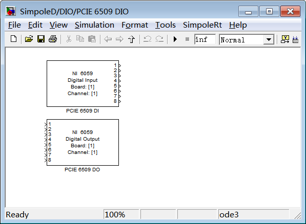
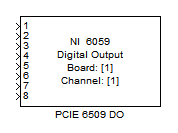
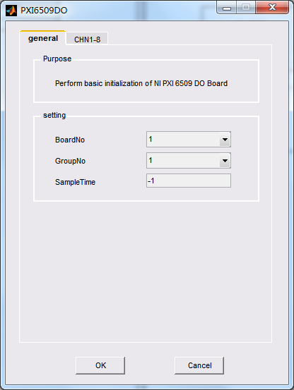
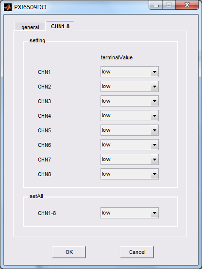
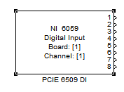
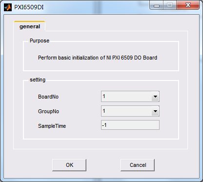

| SimpoleD® | |
|
|---|
PCI6509实时驱动（SimpoleD）是PCI6509 I/O 板卡与系统模型的接口。
本节内容主要介绍PCI6509 SimpoleD库的功能、配置方法。
具体内容如下：
PCI6509 Digital I/O板卡专门用完成DIO操作，包括12个端口，每个端口包含8个双向DIO通道，共96个DIO通道；在使用时，可以单独控制每个DIO通道，也可以对端口操作实现一个字节的并行输出，其中作为DO时有较高的驱动能力（24mA）。
PCI6509板卡的SimpoleD库提供了驱动模块，用于在simulink模型中实现PCI6509的I/O功能。
双击SimpoleD 库中图标：
右键单击，从菜单中打开PCI6509的模块库：

各个单元以及相应模块的详细信息可以通过以下方式访问：

配置板卡号、采用的端口号（组号）、终止输出电压。
输入：TTL电平的逻辑值。
输出：无。
该模块与板卡I/O的映射信息请参见PCI6509 DIO 端口和SimpoleD 端口I/O映射表。
板卡DIO通道电平信号和simulink数据类型之间的关系如下表所示
| DIO（TTL） | Simulink |
|---|---|
| low | 0（boolean） |
| high | 1（boolean） |
PCI 6509 DO模块GUI配置界面如下图所示。

BoardNo：选择板卡号，范围为1至16，如果同一个目标机中存在多块同类型的板卡，采用板卡号以区别使用某一块板卡。
GroupNo：选择要使用的端口号（组号），选择范围1至12。
Sample Time：配置采样时间，数据可设置为-1或>0.0的任一数值。当设置为-1时，采样时间继承仿真步长。

terminal Value：设定终止值，使被驱动外部设备在仿真结束时处于安全或者有效状态。
setAll：列操作各个参数。如若CH1-8选择为low，则CH1至CH8的Terminal Value全部选择为low。

选择板卡号，要采用的端口号（组号）。
输入：无。
输出：TTL电平的逻辑值。
该模块与板卡I/O的映射信息请参见PCI6509 DIO 端口和RTD 端口I/O映射表。
板卡DIO通道电平信号和simulink数据类型之间的关系如下表所示
| DIO（TTL） | Simulink |
|---|---|
| low | 0（boolean） |
| high | 1（boolean） |
PCI6509板卡的DI模块GUI配置界面如下图所示。

BoardNo：选择板卡号，范围为1至16，如果同一个目标机中存在多块同类型的板卡，采用板卡号以区别使用某一块板卡。
GroupNo：选择要使用的作为数字输入的端口号。
Sample Time：配置采样时间，数据可设置为-1或>0.0的任一数值。当设置为-1时，采样时间继承仿真步长。
注意：同一模型中不能同时将同一端口既作为数字输入又作为数字输出。
|
PCI6509 Features
|
PCI6509 Hardware Reference
|
|---|